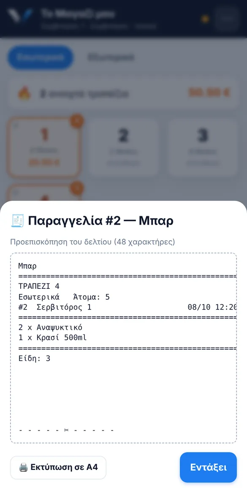

Το Vero μετατρέπει το PDA ή το κινητό του σερβιτόρου σε σύστημα παραγγελιοληψίας. Τραπέζια, παραγγελίες, εκτύπωση σε κουζίνα και μπαρ, λογαριασμός. Απλό από την πρώτη βάρδια.
Δυνατότητες
Φτιαγμένο για ταβέρνες, εστιατόρια, καφέ και beach bars, εκεί όπου κάθε δευτερόλεπτο στο πάσο μετράει.
Σάλες και τραπέζια με χρώμα: ελεύθερο ή ανοιχτό, πόσο χρωστάει, πόση ώρα κάθεται.
Κατηγορίες με χρώματα, μεγάλα κουμπιά, ποσότητες με ένα άγγιγμα. Φτιαγμένο για το ένα χέρι.
«Χωρίς κρεμμύδι», «καλοψημένο», «χωρίς πάγο». Η κουζίνα τα βλέπει τυπωμένα, όχι στο περίπου.
Κάθε κατηγορία πάει στον δικό της εκτυπωτή. Τα φαγητά στην κουζίνα, τα ποτά στο μπαρ, αυτόματα.
Σύνολο, μετρητά ή κάρτα, εκτύπωση λογαριασμού και επανεκτύπωση παραγγελίας όποτε χρειαστεί.
Το Vero συνεχίζει να δουλεύει όταν πέσει το WiFi στη βεράντα. Η βάρδια δεν σταματάει.
Κάθε σερβιτόρος μπαίνει με τον δικό του κωδικό και βλέπει τις δικές του παραγγελίες.
Μαζική εισαγωγή του καταλόγου από απλό κείμενο. Αλλαγές τιμών και νέα πιάτα από τον διαχειριστή.
PDA, κινητό Android ή iPhone, tablet. Ανοίγει σαν εφαρμογή, χωρίς store και χωρίς ενημερώσεις.
Πώς δουλεύει
Χωρίς χαρτάκια, χωρίς πήγαινε-έλα στην κουζίνα, χωρίς «ποιο τραπέζι ήταν αυτό;».
Βλέπεις αμέσως ποια τραπέζια είναι ανοιχτά και πόσο έχουν φάει.
Πιάτα, ποσότητες, σημειώσεις και άτομα. Το σύνολο υπολογίζεται μόνο του.

Η κουζίνα παίρνει τα φαγητά, το μπαρ τα ποτά. Καθαρό δελτίο, στα ελληνικά.
Εκτύπωση & εξοπλισμός
Ερωτήσεις
Όχι απαραίτητα. Το Vero τρέχει σε PDA, κινητά Android, iPhone και tablet. Αν έχεις ήδη θερμικό εκτυπωτή ESC/POS, πιθανότατα δουλεύει κι αυτός.
Το Vero συνεχίζει να δουλεύει. Οι παραγγελίες δεν χάνονται και η βάρδια συνεχίζεται κανονικά.
Περνάμε μαζί τον κατάλογο, τα τραπέζια και τους εκτυπωτές σου και είσαι έτοιμος για την επόμενη βάρδια.
Όχι. Το Vero είναι σύστημα παραγγελιοληψίας. Η έκδοση νόμιμων αποδείξεων γίνεται από την ταμειακή ή τον πάροχο ηλεκτρονικής τιμολόγησης που ήδη χρησιμοποιείς.
Ναι. Μεγάλα κουμπιά, ελληνικά παντού, τρία αγγίγματα για μια παραγγελία. Οι περισσότεροι σερβιτόροι το μαθαίνουν μέσα στην πρώτη βάρδια.
Κλείστε μια δωρεάν παρουσίαση. Σας δείχνουμε πώς δουλεύει με τον δικό σας κατάλογο και τους δικούς σας εκτυπωτές.